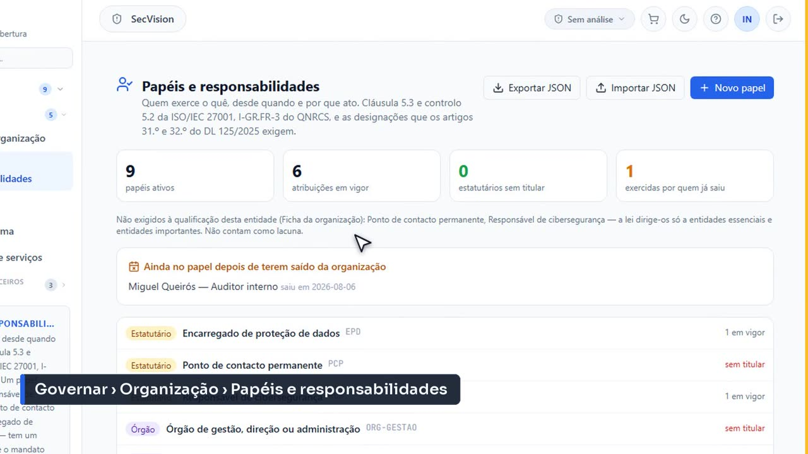
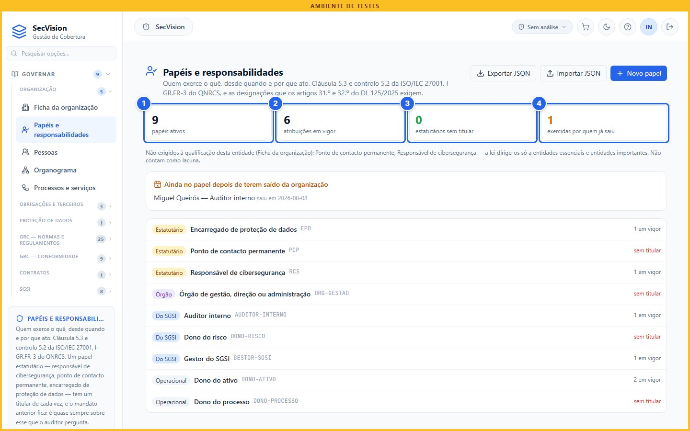
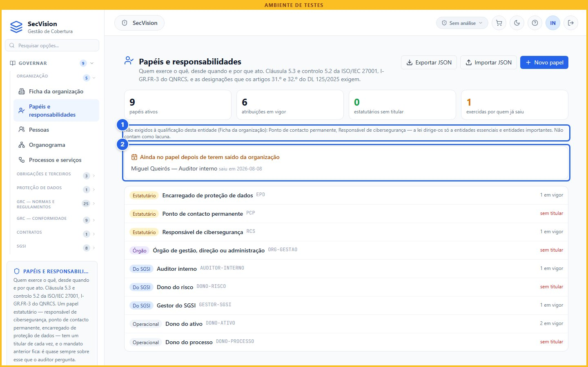
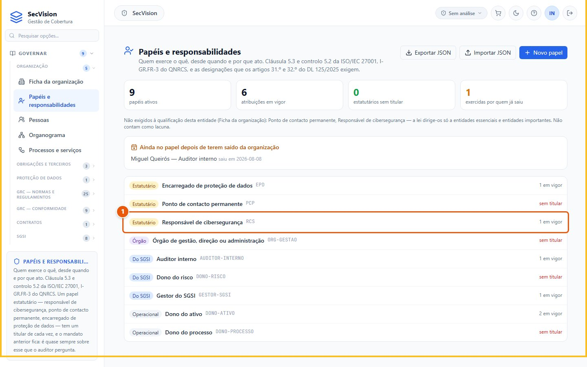
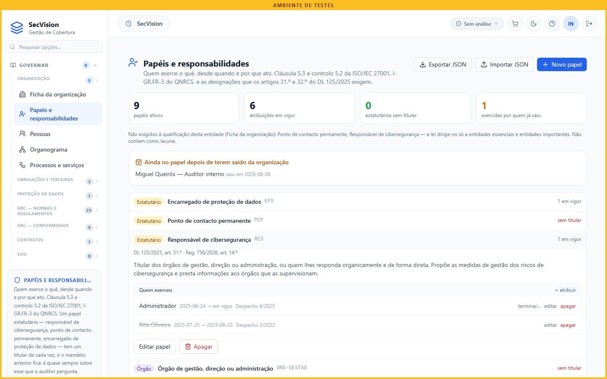
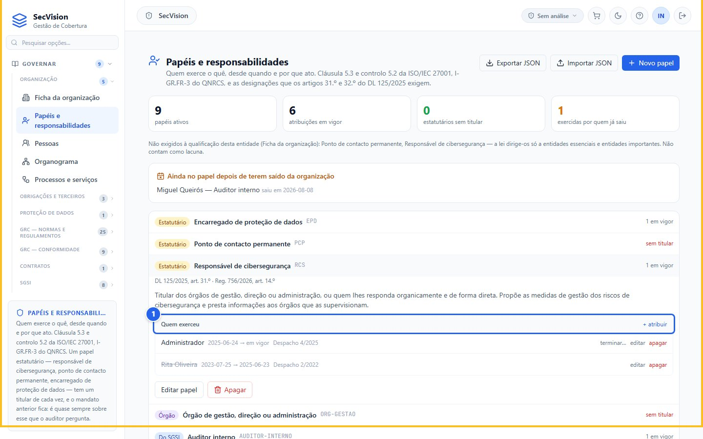
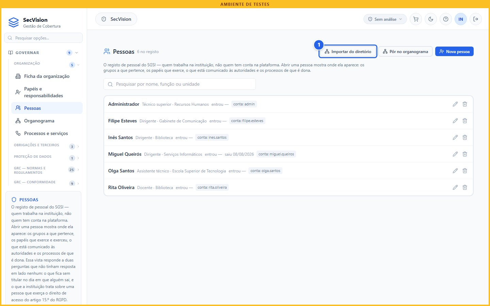
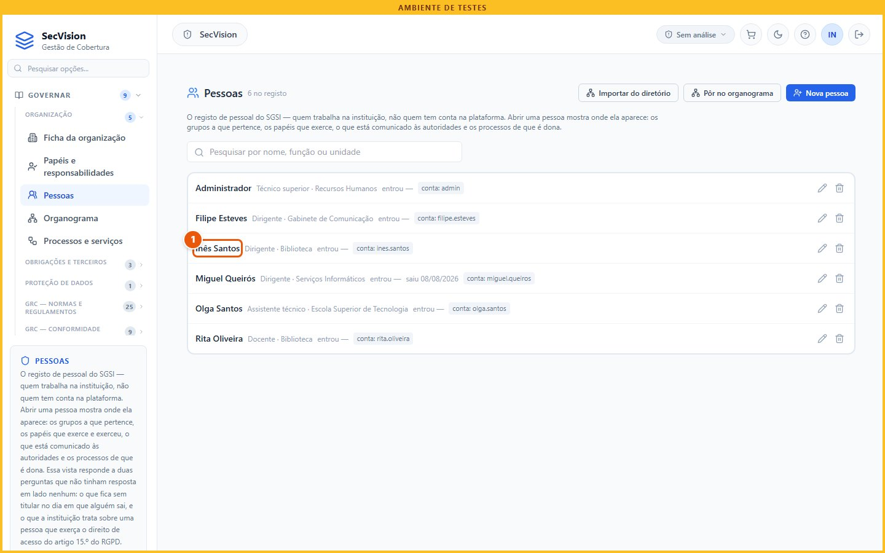
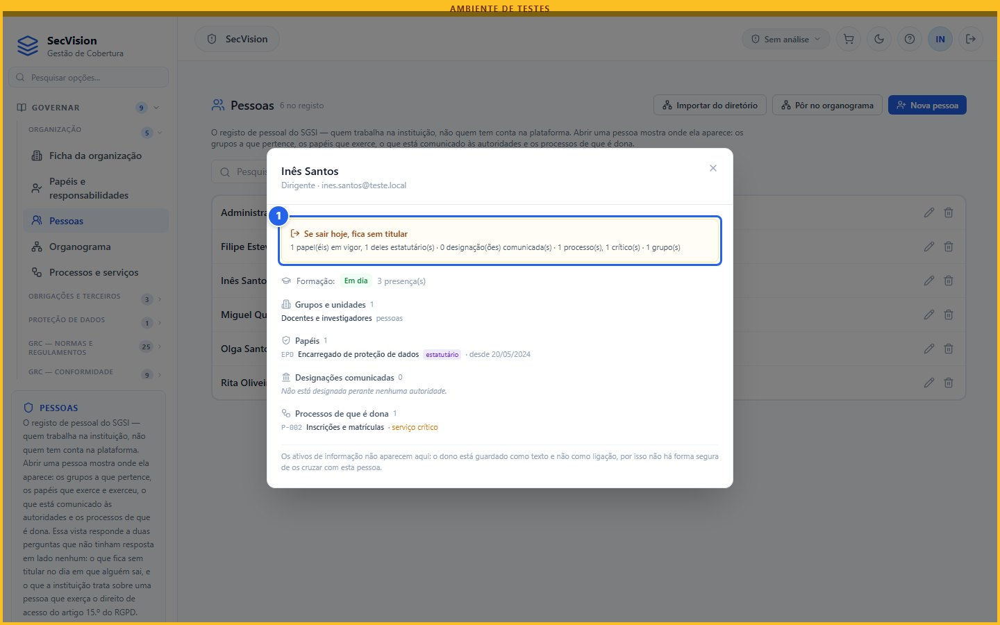

Papéis, responsabilidades e pessoas
Quem faz o quê, desde quando e por que ato: o catálogo de papéis, as designações datadas, as lacunas que a lei manda preencher, e o registo de pessoal com o sítio onde cada pessoa aparece.
Depois de identificar a organização, dizemos quem faz o quê. Nesta página vemos dois ecrãs que trabalham juntos: os papéis e responsabilidades, e o registo das pessoas.
Porquê
A norma ISO 27001 pede que os papéis, as responsabilidades e as autoridades estejam definidos e comunicados. A lei pede algumas designações com nome: nas entidades essenciais e importantes, o responsável de cibersegurança e o ponto de contacto permanente.
E a pergunta que um auditor faz é sempre a mesma: quem exerce este papel, desde que data, e por que ato. Este ecrã existe para responder a essas três coisas.
Para que serve
A ISO/IEC 27001 pede papéis, responsabilidades e autoridades definidos e comunicados (cláusula 5.3).
A lei pede designações com nome: responsável de cibersegurança e ponto de contacto, nas essenciais e importantes (art. 31.º e art. 32.º).
O RGPD pede o encarregado de proteção de dados; o Anexo IV pede um ponto de contacto para incidentes (O.CRI).
A pergunta do auditor é sempre a mesma: quem exerce, desde que data, e por que ato.
Antes de abrir o ecrã
Antes de começar, reúna os despachos de designação, com as datas, junto da direção e da secretaria-geral; e a lista de pessoal, com funções, unidades e datas de entrada e saída, junto dos recursos humanos.
O que pedir a quem
Informação |
Quem a tem |
|---|---|
Despachos e deliberações de designação, com data |
direção; secretaria-geral |
Lista de pessoal, com funções, unidades e datas de entrada e saída |
recursos humanos |
Quem é o encarregado de proteção de dados |
direção; o próprio encarregado |
Os donos dos processos e dos ativos |
responsáveis de cada serviço |
Os papéis
Menu: Governar › Organização › Papéis e responsabilidades
No menu Governar, Organização, Papéis e responsabilidades. O catálogo vem já semeado com os papéis que as normas instaladas nomeiam: o responsável de cibersegurança, o ponto de contacto permanente, o encarregado de proteção de dados, o órgão de gestão, o gestor do sistema de gestão, os donos e o auditor interno. Cada um traz a base legal.

O ecrã em Governar › Organização › Papéis e responsabilidades.
No topo, quatro números: os papéis ativos, as atribuições em vigor, os papéis estatutários sem titular, e as atribuições de quem já saiu da organização. Cada número carrega-se, e filtra a lista para os papéis que conta.

Os quatro números.
Papéis ativos
Atribuições em vigor
Estatutários sem titular
Quem já saiu
Por baixo, as lacunas que se pagam numa auditoria. Um papel estatutário só conta como lacuna se a lei o exigir a esta entidade. O nosso politécnico é uma entidade pública relevante, e os artigos 31.º e 32.º do decreto-lei dirigem-se às essenciais e importantes.
Por isso o ponto de contacto permanente aparece numa linha à parte, como não exigido, com a razão escrita. A qualificação que decide isto é a da Ficha da organização. E logo abaixo, a lista de quem continua num papel depois de ter saído da organização: é o caso mais comum de um auditor encontrar um responsável que já lá não está.

O que a lei exige — a esta entidade.
Não exigidos a esta entidade
Ainda no papel depois de sair
Uma designação
Abrimos o responsável de cibersegurança. Lá dentro está a resposta à pergunta do auditor: quem exerce, desde que data, e por que despacho. E o mandato anterior fica: não se apaga, termina-se, com a data do último dia em funções.
Um papel estatutário tem um titular de cada vez — a lei nomeia um responsável, não três. Para trocar, termina-se a atribuição em vigor e cria-se a seguinte. O despacho em si guarda-se nas evidências, ligado ao controlo, e não aqui: um segundo cofre de ficheiros daria duas cópias divergentes.

Quem exerce, desde quando, por que ato (1 de 3).
Clique em Estatutário.

Quem exerce, desde quando, por que ato (2 de 3).

Quem exerce, desde quando, por que ato (3 de 3).
Quem exerce, desde quando, por que ato
As pessoas
Menu: Governar › Organização › Pessoas
Agora as Pessoas. É um registo de pessoal, não de contas: nem toda a gente tem acesso à plataforma, e quem tem pode não estar aqui. Cada pessoa tem nome, função, unidade e as datas de entrada e de saída.
Havendo ligação ao diretório da organização, o botão Importar do diretório mostra primeiro o que entraria, sem escrever nada. Quem já está no registo chega desmarcado: sobrepor o que alguém escreveu tem de ser uma decisão.

O ecrã em Governar › Organização › Pessoas.
Importar do diretório
Abrir uma pessoa mostra onde ela aparece: os grupos e unidades, os papéis que exerce e que já exerceu, o que foi comunicado às autoridades em nome dela, os processos de que é dona, e a formação.
Responde a duas perguntas. O que fica sem titular no dia em que esta pessoa sair — os papéis estatutários e os processos críticos aparecem em destaque. E o que a instituição trata sobre ela, se exercer o direito de acesso do artigo 15.º do Regulamento Geral sobre a Proteção de Dados.

Onde esta pessoa aparece (1 de 2).
Clique em Inês Santos.

Onde esta pessoa aparece (2 de 2).
O que fica sem titular
Resumo
Em resumo: a plataforma guarda quem exerce o quê, com datas e atos, e aponta as lacunas que a lei exige a esta entidade. Essas lacunas chegam ao dossier do auditor e às evidências.
O catálogo de papéis exporta-se para outra instalação — sem as atribuições, que são dados pessoais. E a comunicação das designações ao CNCS faz-se na plataforma do CNCS; aqui regista-se que foi feita, como vemos na página das autoridades.
O que a plataforma faz — e o que não faz
Guarda as designações datadas e o histórico; aponta as lacunas que a lei exige a esta qualificação.
Leva as lacunas ao dossier do auditor e às evidências recolhidas automaticamente.
Exporta o catálogo de papéis para outra instalação, sem as atribuições — que são dado pessoal.
Não comunica nada ao CNCS: as designações comunicam-se na plataforma do CNCS (Autoridades, designações e notificações).